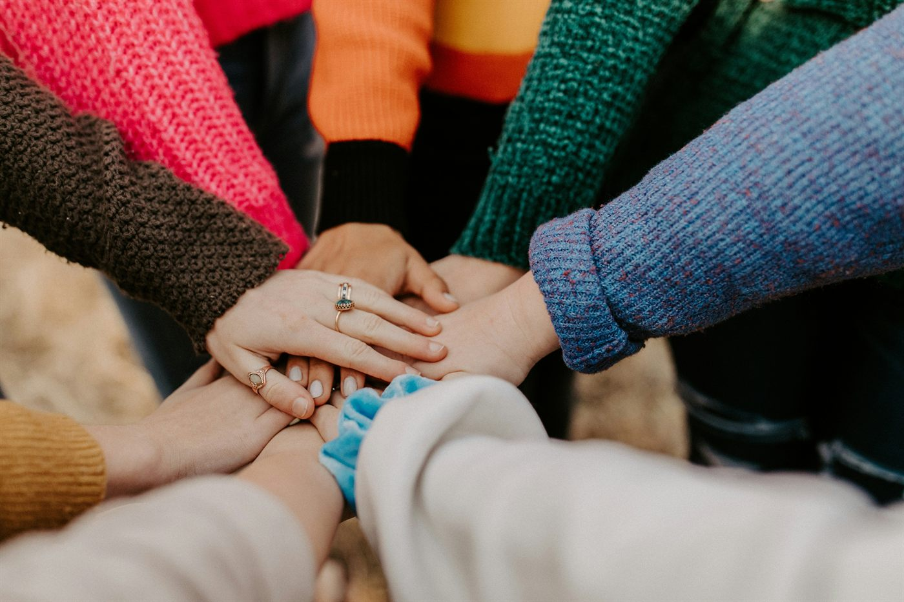
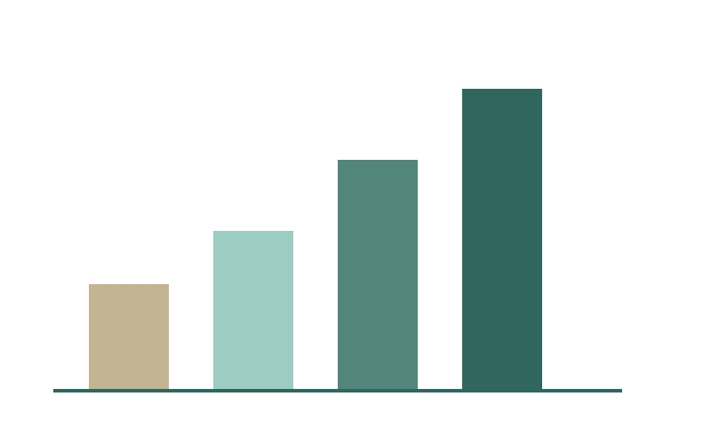
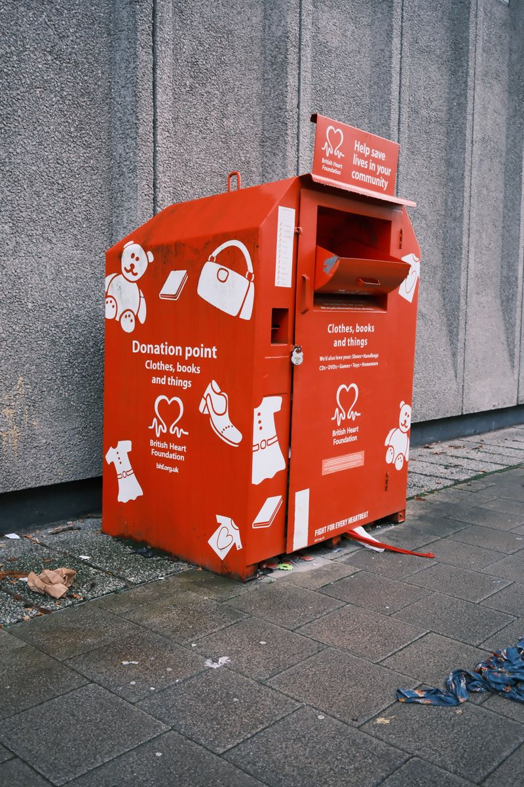

Restoring dignity, one garment at a time
Clothes For All collects, sorts and shares good-quality pre-loved clothing with families, learners and communities across South Africa who cannot always afford basic essentials.

Welcome to Clothes For All
Founded in 2018, Clothes For All started as a small group of volunteers in Johannesburg. Today we have Collection Centres in Cape Town, Durban and Gqeberha, and more than 50 volunteers collect, sort, clean and distribute clothing to families, matriculants and communities in need across Gauteng, the Eastern Cape and KwaZulu-Natal.
Our Impact

8 years
of service to South African communities.
50+ volunteers
collecting, sorting and distributing clothing.
3 provinces
reached: Gauteng, Eastern Cape and KwaZulu-Natal.
Thousands helped
including school learners and matriculants.
Ways You Can Help

Donate
Drop off clean, good quality clothing at a Collection Centre, or donate money.
Volunteer
Help us collect, sort and distribute clothing in your city.
Help Spread the Word
Share Clothes For All with your community and help more people discover ways to donate or volunteer.